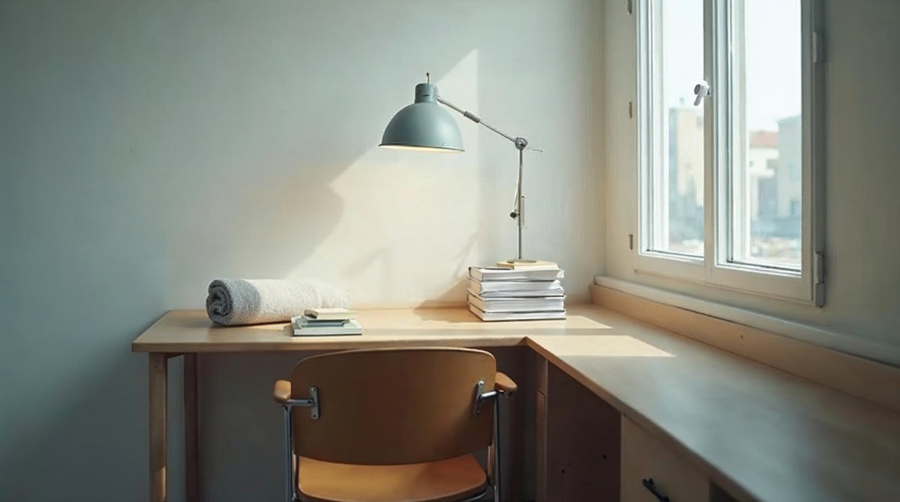
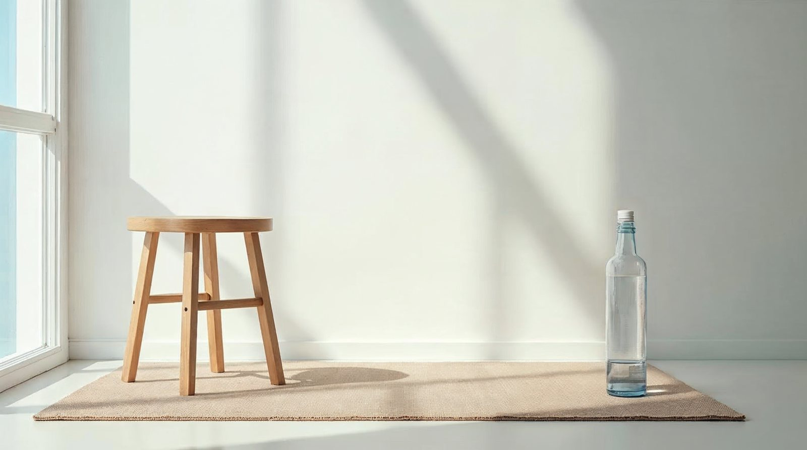
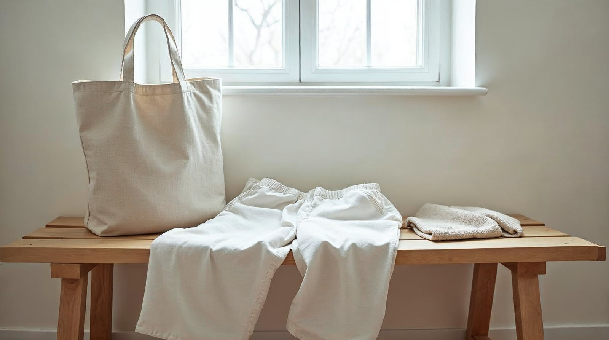
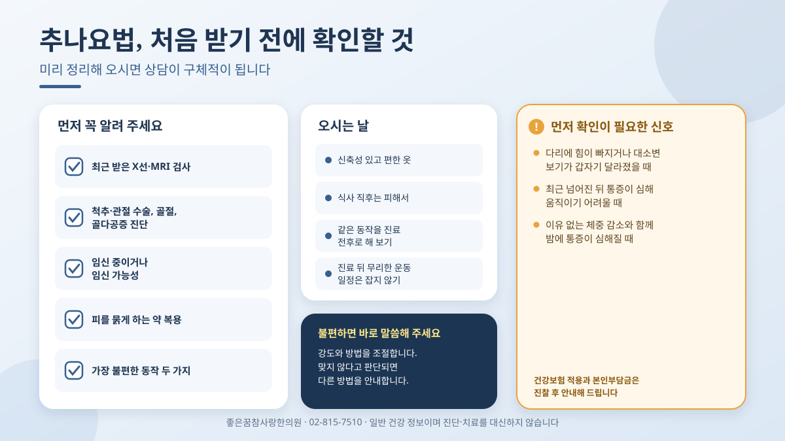

이종호 한의사 감수좋은꿈참사랑한의원 대표원장 (한의사 면허번호 19769)발행 2026-11-24 · 수정 2026-11-26
이 글의 차례
- 왜 받기 전에 정리해 두면 좋을까요
- 추나가 맞지 않을 수 있는 경우는 언제인가요?
- 비슷해 보여도 구분해 볼 불편
- 먼저 이렇게 여쭙니다
- 일상에서 먼저 해 볼 수 있는 것
- 상황별 예시
- 추나에 대해 자주 하는 오해
- 자습실과 사무실 자리는 어떻게 바꿔 볼까요?
- 한의원에서 함께 살필 수 있는 경우
- 수험생과 직장인은 시간을 어떻게 잡으면 좋을까요?
- 추나 받은 뒤 며칠은 이렇게 지내 보세요
- 진료 당일에는 이렇게 말씀해 주세요
- 처음이라 긴장된다면 어떻게 할까요?
- 추나 뒤 집에서 이어 갈 짧은 움직임
- 스스로 점검해 보세요
- 이렇게 기록해 오시면 상담이 쉬워집니다
- 이런 증상은 먼저 확인이 필요합니다
- 얼마나 지켜보고 언제 상담할까요
- 관련 글
노량진 학원가와 상도동 사무실에서 하루 종일 앉아 지내다 보면 "추나를 한번 받아 볼까" 생각하게 됩니다. 처음이라 막연히 긴장된다는 분도 많습니다. 받기 전에 가장 불편한 동작 한두 가지, 수술·골절·골다공증 이력, 임신 가능성, 복용 중인 약, 최근 영상 검사 결과만 스스로 정리해 두면 상담이 훨씬 구체적이 되고 마음도 한결 가벼워질 수 있습니다.
노량진역에서 오신다면 노량진역(1·9호선) 3번 출구에서 마을버스 동작01을 타고 신동아리버파크에서 내리시면 됩니다. 상도역에서는 3번 출구로 나와 약 200m 직진한 뒤 오거리에서 우회전해 약 200m 오시면 됩니다. 수업이나 자습 사이에 들르신다면, 초진은 진찰 시간이 있어 재진보다 오래 걸릴 수 있으니 여유 있게 시간을 잡아 주세요.
왜 받기 전에 정리해 두면 좋을까요
추나를 찾게 되는 뻐근함은 대개 생활 속 자세에서 시작되지만, 같은 뻐근함이라도 몸 상태에 따라 고를 수 있는 기법과 세기가 달라집니다.
- 오래 앉아 있으면 골반이 뒤로 말리고 허리와 등이 굽은 채로 굳기 쉽습니다.
- 모니터와 휴대폰을 내려다보는 시간이 길면 목과 어깨에 부담이 몰립니다.
- 한쪽으로 가방을 메거나 다리를 꼬는 습관이 쌓이면 몸의 균형이 한쪽으로 기울 수 있습니다.
- 움직임이 줄면 허리와 엉덩이 주변 근육이 짧아지고 약해지기도 합니다.
- 골다공증, 골절·수술 이력, 임신, 피를 묽게 하는 약 복용 여부에 따라 추나를 미루거나 부드러운 방법만 쓰는 경우가 있어, 미리 알려 주시면 그날 진료를 안전하게 정할 수 있습니다.
추나가 맞지 않을 수 있는 경우는 언제인가요?
추나는 손으로 관절과 근육을 움직이는 치료라, 몸 상태에 따라 미루거나 다른 방법을 먼저 쓰는 편이 나은 때가 있습니다. 골다공증이 심하거나 최근 골절·수술을 받은 경우, 임신 중인 경우가 대표적입니다.
넘어지거나 부딪힌 직후 통증이 심해 몸을 움직이기 어렵다면, 먼저 영상 검사가 필요한지부터 살핍니다. 이런 내용을 미리 알려 주시면 그날 추나를 할지, 부드러운 기법만 쓸지, 침이나 약침을 먼저 쓸지를 안전하게 정할 수 있습니다.
두개천골추나처럼 아주 부드러운 기법도 있어, 강한 교정이 걱정되시는 분께는 그 차이를 먼저 설명드립니다. 어떤 방법이든 진찰 뒤에 이유를 말씀드리고 진행합니다.
비슷해 보여도 구분해 볼 불편
- 앉아 있을 때만 뻐근하고 일어나 움직이면 풀리는 경우는 자세와 근육 긴장이 큰 몫을 하는 경우가 많습니다.
- 엉덩이에서 다리 뒤쪽으로 저림이 뻗치거나 발끝 감각이 둔해지는 경우는 신경이 눌리는 문제를 함께 살펴야 합니다.
- 아침에 일어날 때 허리가 30분 넘게 굳어 있고 움직이면 조금씩 풀리는 일이 몇 주째 이어진다면, 다른 원인을 확인할 검사가 필요한지도 함께 봅니다.
- 목을 돌릴 때 어지럼이 함께 오거나 두통이 심해진다면 그 내용을 먼저 말씀해 주세요.
이런 차이를 스스로 다 구분하실 필요는 없습니다. 언제, 어떤 동작에서, 어디가 어떻게 불편한지만 알려 주시면 진료실에서 함께 가려 봅니다.
먼저 이렇게 여쭙니다
- 어떤 동작을 할 때 가장 불편하신가요? 앉았다 일어설 때, 고개를 돌릴 때처럼 알려 주세요.
- 불편이 언제, 어떤 계기로 시작됐나요? 넘어지거나 부딪힌 일이 있었나요?
- 최근 X선이나 MRI 같은 영상 검사를 받은 적이 있나요?
- 척추나 관절 수술, 골절, 골다공증 진단을 받은 적이 있나요?
- 임신 중이거나 임신 가능성이 있나요? 피를 묽게 하는 약을 드시나요?
- 예전에 추나를 받아 본 적이 있다면 그때 불편했던 점이 있었나요?

일상에서 먼저 해 볼 수 있는 것
- 신축성 있고 편한 옷을 입고 오기
- 식사 직후보다는 조금 시간이 지난 뒤 방문하기
- 불편한 동작 한두 가지를 미리 정해 두고 진료 전후로 같은 동작을 해 보기
- 진료 뒤 바로 무리한 운동 일정은 잡지 않기
- 받기 하루 이틀 전부터 하루에 앉아 있는 시간과 자세를 한 번 적어 보기
- 50분쯤 앉아 있었다면 일어나 2~3분 걷거나 가슴을 펴 보기

상황별 예시
- 예를 들어 노량진 학원에서 하루 열 시간 가까이 앉아 공부하는 수험생이라면, 진료 직후 바로 자습실로 돌아가야 하는 경우가 많습니다. 이럴 때는 공부 흐름이 덜 끊기는 시간대로 진료를 잡고, 자습실 의자와 책상 높이를 사진으로 찍어 오시면 앉는 자세를 함께 살필 수 있습니다.
- 예를 들어 사무실에서 모니터 두 대를 쓰며 고개를 한쪽으로 돌린 채 일하는 직장인이라면, 목과 등 한쪽만 결리는 경우가 있습니다. 어느 쪽으로 고개를 돌릴 때 불편한지, 퇴근 무렵 더 심해지는지를 알려 주시면 도움이 됩니다.
- 예를 들어 골다공증 진단을 받은 어르신이라면 강한 교정보다 부드러운 기법을 먼저 검토하거나 추나 대신 다른 방법을 안내할 수 있어, 골밀도 검사 결과와 드시는 약을 함께 가져와 주세요.
추나에 대해 자주 하는 오해
- "추나는 꼭 뚝 소리가 나야 한다"고 여기는 분이 많지만, 관절과 근육을 천천히 늘이고 움직이는 기법도 많아 소리가 나지 않는 경우도 흔합니다.
- "한 번 세게 맞추면 끝난다"고 생각하기 쉽지만, 오래 앉아 생긴 뻐근함은 생활 자세가 그대로면 다시 돌아오기 쉬워 몇 차례 이어 보며 반응을 살피는 경우가 많습니다.
- "아플수록 더 잘 듣는다"는 생각도 있지만, 아프면 몸이 더 굳기 쉬워 불편하면 바로 말씀해 주시는 편이 좋습니다.
- "추나만 받으면 운동은 안 해도 된다"고 여기기도 하지만, 집에서 이어 가는 짧은 움직임이 함께할 때 몸의 변화를 살피기 쉽습니다.
자습실과 사무실 자리는 어떻게 바꿔 볼까요?
- 모니터나 책은 눈높이에서 조금 아래에 오도록 받침대를 써서 올리기
- 의자에 깊숙이 앉아 엉덩이를 등받이에 붙이고, 허리 뒤에 작은 쿠션 대기
- 발바닥이 바닥에 편히 닿지 않으면 발받침이나 상자를 놓기
- 휴대폰은 고개를 숙여 내려다보지 말고 가슴 높이로 들어 보기
자리를 한 번에 다 바꾸기 어렵다면 한 가지씩만 해 보세요. 바꾼 뒤 일주일 동안 뻐근함이 어땠는지 적어 오시면 진료 때 함께 살펴봅니다.
한의원에서 함께 살필 수 있는 경우
- 오래 앉아 생긴 목·허리 뻐근함이 반복되는 경우, 자세와 움직임을 함께 살핍니다.
- 진찰 후 추나가 맞지 않다고 판단되면 다른 방법을 안내합니다.
- 진료 중 불편하면 언제든 바로 말씀해 주세요. 강도와 방법을 조절합니다.
좋은꿈참사랑한의원에서는 불편한 동작을 충분히 듣고 서고 앉고 걷는 모습을 살핀 뒤, 추나가 맞는지 판단합니다. 첫 방문에는 접수 때 기본 정보를 적고, 진료실에서는 모든 분께 하듯 맥부터 짚으면서 불편이 시작된 경위와 수술·골절 이력, 복용 중인 약을 여쭙습니다.
이어서 목과 허리를 어느 방향으로 움직일 때 막히는지, 팔다리 힘과 몸의 좌우 높이는 어떤지 확인하고, 오늘 할 방법과 이유를 먼저 설명드린 다음 진행합니다. 필요하다고 판단될 때는 침·약침과 이어서 씁니다.
추나 뒤에는 처음 확인한 동작을 다시 해 보며 달라진 점을 함께 봅니다. 귀가 전에는 집에서 피할 자세와 다음 진료에서 다시 확인할 동작을 알려 드립니다.
수험생과 직장인은 시간을 어떻게 잡으면 좋을까요?
추나는 한 번에 끝내기보다 몇 차례 이어서 몸의 반응을 보는 경우가 많아, 생활 리듬에 맞는 시간대를 고르는 것이 좋습니다. 수업과 자습 시간이 정해진 수험생이라면 매주 비슷한 시간대를 잡아 두시면 이어 가기 쉽습니다.
퇴근 뒤에 오시는 직장인이라면 평일 진료가 저녁 8시까지라는 점을 감안해 조금 여유 있게 예약해 주세요. 추나 뒤 바로 운동이나 술자리 일정이 있다면 다른 날로 잡는 편이 좋습니다.
방문 간격은 진찰 뒤 상태를 보며 함께 정하고, 지내 보시면서 조정합니다.
추나 받은 뒤 며칠은 이렇게 지내 보세요
- 진료 당일은 오래 앉아 있지 말고 한 시간에 한 번 일어나 가볍게 걷기
- 따뜻한 물로 샤워하며 뻐근한 자리를 풀어 주기
- 무거운 짐 들기나 격한 운동은 하루 이틀 미루기
- 진료 때 확인한 동작을 다음 날 아침 한 번 해 보고 느낌을 적어 두기
이렇게 적어 두신 느낌은 다음 진료에서 기법과 세기를 정할 때 그대로 쓰입니다. 귀찮더라도 한 줄씩만 남겨 주세요.
진료 당일에는 이렇게 말씀해 주세요
- "앉았다 일어설 때 허리 오른쪽이 6점쯤 아파요"처럼 동작, 자리, 점수를 함께
- "지난달 넘어진 적이 있어요"처럼 최근에 있었던 일
- "강하게 누르는 건 무서워요"처럼 걱정되는 점
이렇게 말씀해 주시면 오늘 어떤 기법을 어느 세기로 쓸지 정하기 쉽습니다. 진행 중에도 불편하면 바로 말씀해 주세요.
처음에는 말로 설명하기 어려우실 수 있어, 진료실에서 불편한 동작을 직접 해 보시도록 여쭙기도 합니다. 그 동작을 추나 뒤에 다시 해 보며 함께 비교합니다.
비교한 결과는 다음 진료 때도 이어서 보니, 집에서 같은 동작을 해 본 느낌을 짧게 적어 오시면 좋습니다.
처음이라 긴장된다면 어떻게 할까요?
처음 추나를 받으실 때 몸에 힘이 잔뜩 들어가는 분이 많습니다. 긴장하면 근육이 굳어 움직이기가 더 어려워지니, 걱정되는 점을 시작 전에 말씀해 주세요.
진행하기 전에 어떤 자세로 어떤 방향으로 움직일지 먼저 설명드리고, 숨을 천천히 내쉬는 때에 맞춰 진행합니다. 중간에 멈추고 싶으면 언제든 말씀하시면 됩니다.
추나 뒤 집에서 이어 갈 짧은 움직임
- 누워서 무릎을 세우고 좌우로 천천히 흔들기 10번
- 의자에 앉아 등을 곧게 편 채 가슴을 앞으로 내밀었다 둥글게 말기 10번
- 벽에 등을 대고 서서 턱을 살짝 당기고 숨을 고르기 몇 번
무엇을 할지는 진찰 뒤 지금 몸에 맞게 골라 드리니, 위 동작은 참고로만 보시고 아픈 동작은 하지 마세요.
스스로 점검해 보세요
추나를 받기 전에 아래 항목을 한 번 짚어 보시고, 해당되는 것은 진료 때 먼저 말씀해 주세요.
- 앉았다 일어설 때, 고개를 돌릴 때처럼 불편한 동작을 두 가지 안으로 꼽을 수 있다
- 최근 넘어지거나 부딪힌 일이 있었는지 떠올려 보았다
- 골다공증, 골절, 척추·관절 수술 이력이 있다면 언제였는지 기억해 두었다
- 임신 중이거나 임신 가능성이 있는지 확인했다
- 피를 묽게 하는 약처럼 오래 드시는 약의 이름을 적어 두었다
- 다리로 뻗치는 저림이나 힘 빠짐이 있는지 스스로 살펴보았다
- 진료 당일 입을 편한 옷과 식사 시간을 정해 두었다
이렇게 기록해 오시면 상담이 쉬워집니다
- 가장 불편한 동작 두 가지와 그때의 통증 정도(0~10점)
- 하루에 앉아 있는 시간과 책상·의자 높이
- 하루 중 가장 뻐근한 시간대(아침에 일어날 때, 오후 늦게 등)
- 영상 검사 결과지, 수술·골절 이력
- 복용 중인 약, 특히 혈액을 묽게 하는 약
이런 증상은 먼저 확인이 필요합니다
- 다리에 힘이 빠지거나 대소변 보기가 갑자기 달라진 경우
- 최근 넘어진 뒤 통증이 심해 움직이기 어려운 경우
이런 신호가 있으면 한의원보다 가까운 병원이나 응급실을 먼저 찾으세요.

얼마나 지켜보고 언제 상담할까요
- 오래 앉은 날 저녁에만 뻐근하고 자고 나면 가라앉는다면, 일주일쯤 앉는 시간을 나누고 자주 일어나 보며 지켜보셔도 됩니다.
- 같은 자리가 2~3주 넘게 되풀이해 뻐근하거나, 쉬어도 다음 날 아침까지 이어진다면 상담을 받아 보세요.
- 추나를 받은 뒤 하루 이틀은 몸살처럼 뻐근할 수 있습니다. 저림이 새로 생기거나 사흘이 지나도 점점 심해지면 다음 예약을 기다리지 말고 연락해 주세요.
관련 글
- 추나요법은 처음 받을 때 어떤 순서로 진행되나요?
- 추나를 받은 날 집에서는 어떻게 지내면 좋을까요?
- 추나요법 건강보험 적용은 어떻게 확인하나요?

여쭙는 것
- 어떤 동작을 할 때 가장 불편하신가요? 앉았다 일어설 때, 고개를 돌릴 때처럼 알려…
- 불편이 언제, 어떤 계기로 시작됐나요? 넘어지거나 부딪힌 일이 있었나요?
- 최근 X선이나 MRI 같은 영상 검사를 받은 적이 있나요?
생활에서 해 볼 것
- 신축성 있고 편한 옷을 입고 오기
- 식사 직후보다는 조금 시간이 지난 뒤 방문하기
- 불편한 동작 한두 가지를 미리 정해 두고 진료 전후로 같은 동작을 해 보기
한의원에서 함께 살필 것
- 오래 앉아 생긴 목·허리 뻐근함이 반복되는 경우, 자세와 움직임을 함께 살핍니다.
- 진찰 후 추나가 맞지 않다고 판단되면 다른 방법을 안내합니다.
- 진료 중 불편하면 언제든 바로 말씀해 주세요. 강도와 방법을 조절합니다.
먼저 확인이 필요한 신호
- 다리에 힘이 빠지거나 대소변 보기가 갑자기 달라진 경우
- 최근 넘어진 뒤 통증이 심해 움직이기 어려운 경우
한눈에 보는 표
| 구분 | 핵심 |
|---|---|
| 여쭙는 것 | 어떤 동작을 할 때 가장 불편하신가요? 앉았다 일어설 때, 고개를 돌릴 때처럼 알려 주세요. 불편이 언제, 어떤 계기로 시작됐나요? 넘어지거나 부딪힌 일이 있었나요? |
| 생활에서 해 볼 것 | 신축성 있고 편한 옷을 입고 오기 식사 직후보다는 조금 시간이 지난 뒤 방문하기 |
| 한의원에서 함께 살필 것 | 오래 앉아 생긴 목·허리 뻐근함이 반복되는 경우, 자세와 움직임을 함께 살핍니다. 진찰 후 추나가 맞지 않다고 판단되면 다른 방법을 안내합니다. |
| 먼저 확인이 필요한 신호 | 다리에 힘이 빠지거나 대소변 보기가 갑자기 달라진 경우 최근 넘어진 뒤 통증이 심해 움직이기 어려운 경우 |
자주 묻는 질문
추나를 받기 전에 영상 검사를 꼭 해야 하나요?
모든 분께 필요하지는 않습니다. 진찰 후 필요하다고 판단되면 검사가 가능한 의료기관을 안내합니다.
한 번 받으면 바로 달라지나요?
사람마다 다릅니다. 진료 전후로 같은 동작을 확인하며 변화를 함께 기록합니다.
추나를 받을 때 소리가 나면 무서운데요.
추나에는 관절과 근육을 부드럽게 움직이는 방법도 있어 꼭 소리가 나는 것은 아닙니다. 긴장되는 점을 미리 말씀해 주시면 설명을 드리고 방법을 함께 정합니다.
추나 건강보험 적용은 어떻게 확인하나요?
적용 조건과 본인부담금은 개인 상황에 따라 다를 수 있어 방문 전 전화로 확인해 주세요.
추나를 받은 다음 날 더 뻐근하면 어떻게 하나요?
하루 이틀은 몸살처럼 뻐근할 수 있습니다. 무리하지 말고 지내시다가 저림이 새로 생기거나 점점 심해지면 연락해 주세요.
좋은꿈참사랑한의원은 재진 때 지난번 이야기부터 이어서 여쭙니다. 진료시간과 예약은 오시는 길에서 확인하세요.
어디서 상담받을 수 있나요?
좋은꿈참사랑한의원은 서울 동작구 만양로2길 2 신성빌딩 3층·5층(서울 동작구 상도동, 7호선 상도역 3번 출구 근처)에 있습니다. 한의사 3명(이종호 대표원장, 조영기 수석진료원장, 정원영 진료원장)이 진료합니다. 진료시간은 평일 09:30~20:00(점심 13:00~14:00), 토·일·공휴일 09:30~15:00이며, 방문 전 전화로 확인을 권합니다. 예약은 네이버 예약, 카카오톡 상담, 전화 02-815-7510로 받습니다.
이 글은 일반적인 건강 정보이며 개인의 진단이나 치료를 대신하지 않습니다. 증상이 있거나 복용 중인 약이 있다면 진료를 통해 확인하세요. 치료 효과는 개인마다 다를 수 있습니다.
작성 기준: 일반적으로 알려져 있는 건강 정보를 참고해 정리했습니다(대표원장 감수). 증상 기록은 1~2주 동안 하루 1회, 비슷한 시간에 적어 오시면 지난 상태와 비교하기 쉽습니다.